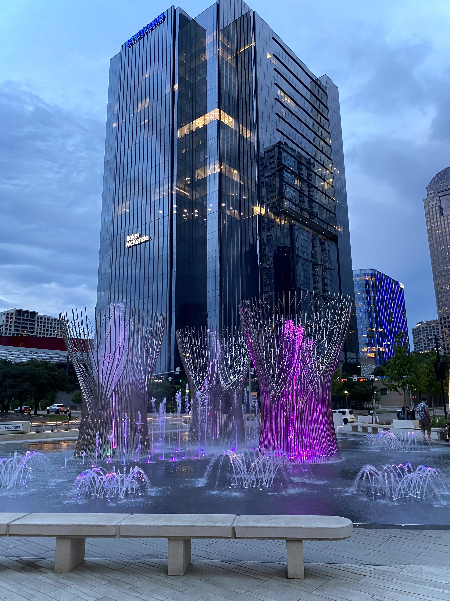

Say hi.
My favorite sunrise.

Gloomy day, but colorful.

A peaceful forest path.
Welcome to the gallery! Here is where you'll find photos that I am proud of.
I dabble with mostly landscape and single subject pieces.
Some of my favorites are of my dog, sunsets/sunrises (I love the golden hour!), but have recently also been liking to cityscapes so be on the lookout for more of that.
Lots of mountains, trees, nature oriented pieces are essentially my favorites.
Say hi.
My favorite sunrise.
Gloomy day, but colorful.
A peaceful forest path.